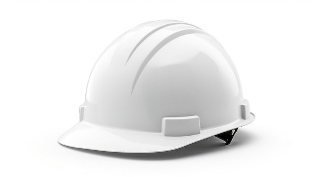
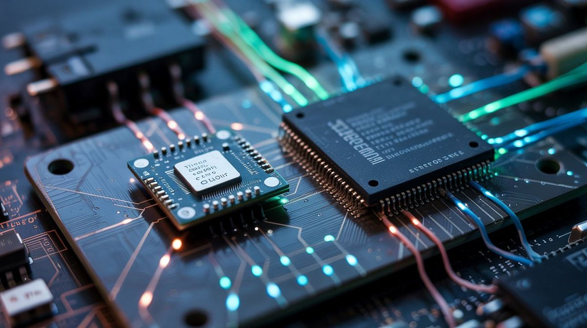
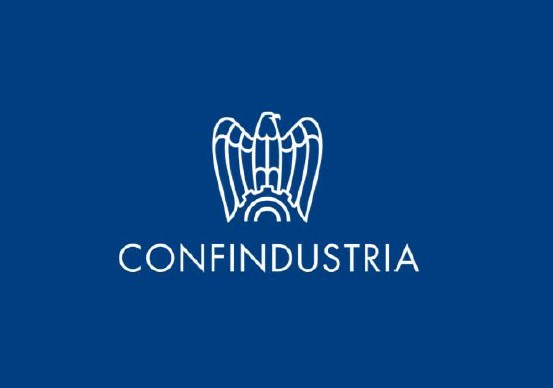
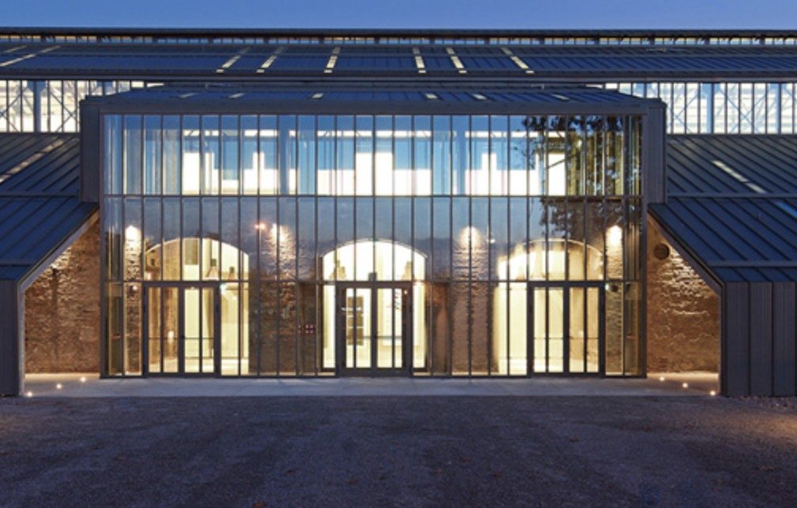

Skillset
strumenti che amo utilizzare
I Miei Progetti
un percorso in divenire
Anno Terzo

UST: Introduzione al PCTO
Un quadro completo su normative, diritti e doveri dello studente in stage.

Prevenzione e Tutela negli Ambienti Professionali
Incontro formativo dedicato alla revisione dei concetti fondamentali sulla sicurezza nei luoghi di lavoro.
BusConnect
Percorso formativo sulla sicurezza online dedicato a persone con disabilità cognitive.

Monta&Smonta
Esperienza pratica di smontaggio e rimontaggio completo di un computer desktop.
Anno Quarto

Confindustria – Mi Presento
Attività formativa condotta da esperti di Confindustria focalizzata sull'orientamento al mondo del lavoro.

CNA – Tecnopolo di Reggio Emilia
Attività formativa svolta presso il Tecnopolo di Reggio Emilia, dedicata all'analisi del funzionamento delle realtà aziendali e delle principali forme contrattuali.

Polarity
Incontro con i professionisti dell'azienda informatica Polarity, che hanno illustrato la loro realtà lavorativa, i servizi offerti e le opportunità del settore tecnologico.
Ascolto Project Work
Sessione di orientamento dedicata alla presentazione dei project work sviluppati dagli studenti delle classi quinte.